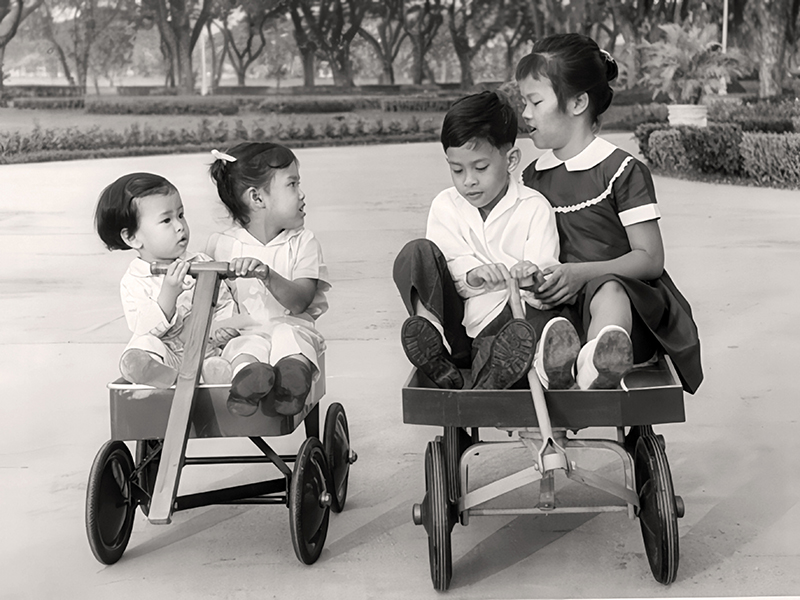

main.jpgภาพใหญ่กรอบเดี่ยว (คอลัมน์ขวา)





สมเด็จพระกนิษฐาธิราชเจ้า กรมสมเด็จพระเทพรัตนราชสุดา เจ้าฟ้ามหาจักรีสิรินธร มหาวชิราลงกรณวรราชภักดี
สิริกิจการิณีพีรยพัฒน รัฐสีมาคุณากรปิยชาติ สยามบรมราชกุมารี
ทรงเสด็จพระราชสมภพ เมื่อวันที่ ๒ เมษายน พุทธศักราช ๒๔๙๘ ณ พระที่นั่งอัมพรสถาน พระราชวังดุสิต เป็นพระราชธิดาในพระบาทสมเด็จพระบรมชนกาธิเบศร มหาภูมิพลอดุลยเดชมหาราช บรมนาถบพิตร และ สมเด็จพระนางเจ้าสิริกิติ์ พระบรมราชินีนาถ พระบรมราชชนนีพันปีหลวง ได้รับพระราชทานพระนามว่า
สมเด็จพระเจ้าลูกเธอ เจ้าฟ้าสิรินธรเทพรัตนสุดา กิติวัฒนาดุลโสภาคย์
พร้อมทั้งประทานคำแปลว่า “นางแก้ว” อันหมายถึงหญิงผู้ประเสริฐ และทรงมีพระนามลำลองในครอบครัวว่า “ทูลกระหม่อมน้อย” ซึ่งแสดงถึงความรัก ความสนิทสนมที่พระราชวงศ์มีต่อพระองค์ ทรงมีพระโสธรเชษฐภคินี ๑ พระองค์ คือ ทูลกระหม่อมหญิงอุบลรัตนราชกัญญา สิริวัฒนาพรรณวดี มีพระโสธรเชษฐา ๑ พระองค์ คือ พระบาทสมเด็จพระเจ้าอยู่หัว และมีพระขนิษฐา ๑ พระองค์ คือสมเด็จพระเจ้าน้องนางเธอ เจ้าฟ้าจุฬาภรณวลัยลักษณ์ อัครราชกุมารี กรมพระศรีสวางควัฒน วรขัตติยราชนารี
ทรงเจริญพระชนมพรรษาท่ามกลางพระราชวงศ์ที่เปี่ยมไปด้วยคุณธรรมและความเมตตาต่อพสกนิกร จึงมีพระราชจริยวัตรที่เปี่ยมไปด้วยความสุภาพอ่อนโยน และในขณะเดียวกันก็ทรงพระวิริยอุตสาหะในการประกอบพระราชกรณียกิจนานัปการอย่างมุ่งมั่น ไม่ย่อท้อต่อความลำบาก ทรงได้รับการอบรมดูแลอย่างใกล้ชิดจากสมเด็จพระบรมชนกนาถ และสมเด็จพระบรมราชชนนีพันปีหลวง ในการพัฒนาคุณภาพชีวิตราษฎรให้ดีขึ้นมาโดยตลอด
๒๔๙๘ พระราชสมภพ ณ พระที่นั่งอัมพรสถาน

๒๕๐๑ ทรงเริ่มศึกษาระดับอนุบาล ที่ ร.ร.จิตรลดา
๒๕๑๐ ทรงสำเร็จการศึกษาระดับประถมฯ คะแนนอันดับ ๑ ของประเทศ
๒๕๑๑ ทรงเริ่มศึกษาระดับมัธยม ที่ ร.ร.จิตรลดา

๒๕๑๕ ทรงสอบ ม.๕ แผนกศิลป์ ได้ที่ ๑ ของประเทศ (๘๙.๓%)
๒๕๑๖ ทรงเริ่มศึกษาคณะอักษรศาสตร์ จุฬาลงกรณ์มหาวิทยาลัย
๒๕๒๐ ทรงสำเร็จการศึกษาอักษรศาสตร์บัณฑิต สาขาประวัติศาสตร์ (เกียรตินิยม) จุฬาลงกรณ์มหาวิทยาลัย

๒๕๒๐ ทรงดำรงตำแหน่งอุปนายิกาผู้อำนวยการสภากาชาดไทย

๒๕๒๐ พระราชพิธีสถาปนาพระอิสริยศักดิ์ในการพระราชพิธีเฉลิมพระชนมพรรษา

๒๕๒๑ ทรงเริ่มศึกษาปริญญาโทที่จุฬาฯ และศิลปากร พร้อมกัน
๒๕๒๓ ทรงเริ่มโครงการเกษตรเพื่ออาหารกลางวัน
๒๕๒๙ ทรงสำเร็จการศึกษาระดับปริญญาดุษฎีบัณฑิต สาขาพัฒนศึกษาศาสตร์ มหาวิทยาลัยศรีนครินทรวิโรฒ (มศว.)

๒๕๓๑ ทรงดำรงตำแหน่งองค์ประธาน กรรมการมูลนิธิชัยพัฒนา

๒๕๓๑ ทรงเริ่มดำเนินงานโครงการนักเรียนในพระราชานุเคราะห์ฯ
๒๕๓๓ ทรงเริ่มโครงการควบคุมโรคขาดสารไอโอดีน
๒๕๓๓ เสด็จฯ เยือน สปป.ลาว ครั้งแรก
๒๕๓๔ ทรงจัดตั้งกองทุนพัฒนาเด็กและเยาวชนในถิ่นทุรกันดาร (กพด.)
๒๕๓๕ ทรงเริ่มโครงการอนุรักษ์พันธุกรรมพืช
๒๕๓๗ ทรงเริ่มโครงการปลูกป่าชายเลนที่ จ. เพชรบุรี และพระราชทานนามนกสายพันธุ์ใหม่ ว่า “นกเจ้าฟ้าหญิงสิรินธร”

๒๕๓๘ ทรงเริ่มโครงการอุทยานธรรมชาติวิทยาฯ

๒๕๓๘ ทรงเริ่มโครงการเทคโนโลยีสารสนเทศฯ
๒๕๔๒ ทรงจัดตั้งศูนย์ภูฟ้าพัฒนา จังหวัดน่าน

๒๕๕๓ ทรงเริ่มโครงการศูนย์พัฒนาพันธุ์สัตว์ อำเภอด่านซ้าย จังหวัดเลย
๒๕๕๔ ทรงเริ่มโครงการครูป่าไม้
๒๕๕๖ ทรงเริ่มโครงการสร้างป่า สร้างรายได้
๒๕๕๗ ทรงเปิดศูนย์กสิกรรม-ป่าไม้ หนองเต่า สปป.ลาว

๒๕๕๙ ทรงเริ่มโครงการทหารพันธุ์ดี
๒๕๖๑ ทรงเริ่มโครงการน้ำดื่มสะอาดในโรงเรียนตำรวจตระเวนชายแดน
๒๕๖๒ พระราชพิธีเฉลิมพระนามาภิไธย ในการพระราชพิธีบรมราชาภิเษก พุทธศักราช ๒๕๖๒

๒๕๖๓ เสด็จฯ ติดตามการดำเนินงาน รร. ตชด. เป็นครั้งที่ ๑,๐๐๐

๒๕๖๓ ทรงตั้งศูนย์ผลิตพันธุ์สัตว์พระราชทาน ปากพนัง จ.นครศรีธรรมราช
ปัจจุบัน ทรงติดตามการดำเนินงานศูนย์สาขาของศูนย์ศึกษาการพัฒนาฯ